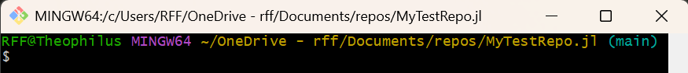
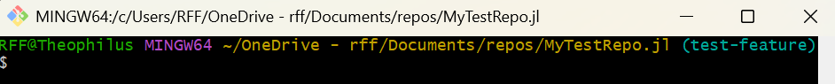
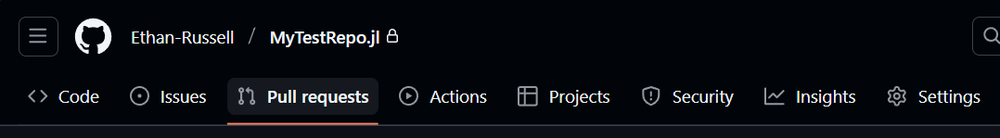
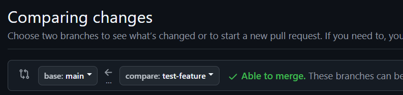

--- title: Example Git Branching --- gitGraph commit id: "initial commit" commit id: "starting point for the new feature" branch my-feature checkout main commit id: "ongoing development of main" checkout my-feature commit id: "trying new feature" commit id: "perfecting new feature" checkout main merge my-feature id: "now it is merged!" commit id: "continued development"
Tutorial: Branching
Before you begin this tutorial, make sure you have:
This is one of the most amazing features of Git. Git allows us to create different working versions, or branches of our repository. This lets me take a snapshot of the repository and try out a new idea without affecting my main branch. Then, once I (and all my collaborators) are satisfied with the changes in my new branch, we can merge it back into the main branch using a Pull Request, which gives tools for reviewing and providing feedback on the proposed changes. This is how the majority of modern software is developed. It allows easy review of the portions of the code that have changed, and gives me confidence that my changes are not messing up the main branch until they are fully developed.
Here’s an overview of the process:
- Pull any code updates!
git pull - Create and check out a new branch with an appropriate branch name.
git branchandgit checkout - Make and push commits to the new branch.
git add,git commit, andgit push. - When ready to merge, create a Pull Request from GitHub.
- Review the Pull Request.
- Merge the Pull Request.
- Check out and pull main branch in Git Bash.
get checkoutandgit pull
1 Creating Branches
You may have realized that Git creates a branch by default, called main. You could think of the main branch as the trunk of a tree. (If you encounter any older repositories, the default was the master branch, but the default was changed in mid-2020). You may notice that Git Bash has the branch name main written to the right of the prompt, which designates that main is the active branch, or the branch that is currently “checked out”.

To create a new branch, simply enter the command git branch <my-branch-name>. Generally, branch names should be:
- concise yet descriptive.
plot-results>plot-all-results-with-numpy - lowercase and hyphen-separated.
plot-resultsrather thanPlotResultsorplot_results - no special characters (numbers, letters, and hyphens only)
- See more info in the branch naming tip
You will notice that after running the git branch command, the main branch is still designated as the active branch. To work on the newly created branch, simply use the command git checkout <new-branch-name>.
After running that command, your new branch should be active.

Note
You can use the following command to create a new branch and check it out in one step:
git checkout -b <new-branch-name>Now that your new branch is active, you can safely make changes and commits to this branch without worrying about modifying the main branch. When you push the branch, Git will give you an error saying that there is no “upstream” branch for the branch you are pushing. You can simply run the command it gives you, i.e. git push --set-upstream origin <new-branch-name>, and it should push with no problems.
2 Merging Branches
2.1 Creating a Pull Request
Once you have made some commits/changes and are ready to merge the new branch back into the main branch, now it is time to make a Pull Request in GitHub. To do that, navigate to the repository GitHub page, and click the “Pull requests” tab, shown below.

Now select the “New pull request” button at the top of the page. We want to select the main branch as the “base” branch, and our new branch as the “compare” branch, as shown below:

Now to finish creating the Pull Request, click the “Create pull request” button on the right side of the page. You may enter a title and description for the Pull Request, which is helpful for contributors to know what is contained in the Pull Request, and you could even include instructions for the contributors who you would like to review the Pull Request. Clicking the “Create pull request” button at the bottom will finish creating the request.
2.2 Reviewing and Merging a Pull Request
Pull requests provide a great opportunity for collaborators to review one anothers’ code, to ensure accuracy. Code review can be daunting, especially if there are only changes to specific parts of a larger codebase. GitHub makes this process very easy, by identifying lines of code that have changed, and allowing collaborators to comment on them.
To review a pull request, the reviewer would navigate to the Pull Request and click on the “files changed” tab. From there, they can see each of the lines added, changed, or deleted, and insert comments on particular lines of code. After reviewing all the files changed, they can complete their review and choose whether or not to approve the pull request. To learn more about reviewing Pull Requests, see the appropriate section of the GitHub documentation.
If the reviewer has requested changes to the code based on their review, you can simply make changes, commit, and push to the same branch, and the Pull Request will be updated with those changes. Once the Pull Request has been reviewed and approved, you can go back to the “Conversation” tab of the Pull Request and click the “Merge pull request” button at the bottom of the page, and your branch’s changes will be reflected in the main branch!
2.3 Conflicting Branches
Sometimes, when we try merging our new branch into the main branch, the Pull Request indicates that there have been changes made to the main branch that conflict with the changes in the new branch. When this happens, let’s go back to Git Bash and merge any new changes from the main branch into our branch, then resolve any potential conflicts. To do this, let’s pull updates to main and then merge main into our new branch by running the following commands:
git checkout main
git pull
git checkout <new-branch-name>
git merge mainTo handle these conflicts, use the process described in the Handling Conflicts section to resolve them.
2.4 Merging Branches without Pull Requests
Merging with a Pull Request may, at times, feel a bit unwieldy, especially if you are in a hurry or working on a project by yourself. It is still possible to merge into the main branch without making and reviewing a Pull Request. We just advise caution with this method because it does not facilitate easy review, and so could easily introduce mistakes into the main branch. If you are confident that the branch is ready to merge without additional review, in Git Bash, simply enter the following commands:
git checkout main
git pull
git merge <new-branch-name>If any conflicts come up, follow the instructions in the Handling Conflicts section. Once you have dealt with the conflicts (if any), you are done, and can push the main branch, which now has updates from your new branch.